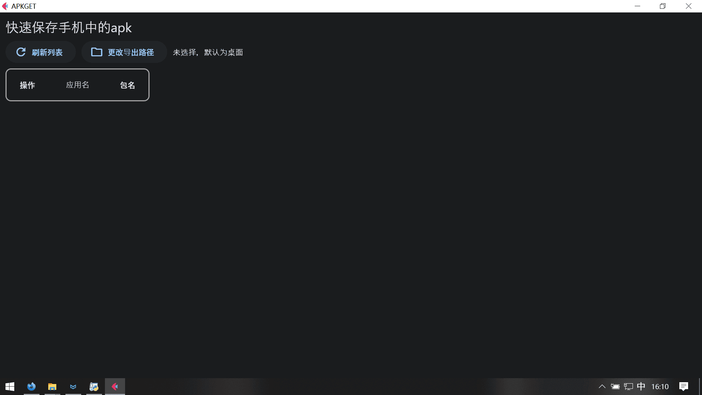
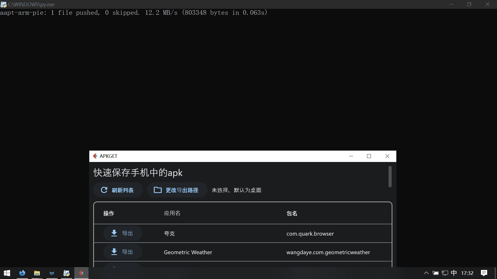
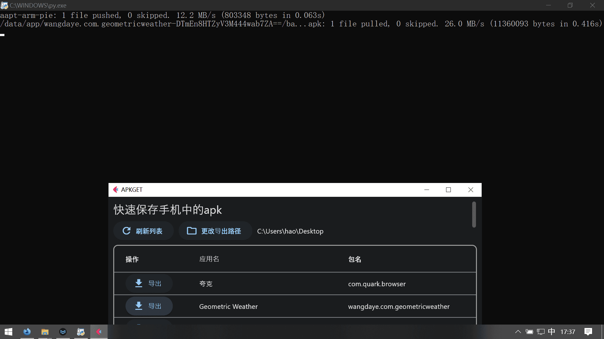

apkget
又是个Python+adb的项目
自己有需求==>立项==>开干
练练手，没什么不好
用了flet做ui（原本想用dpg的，那玩意有点问题，看上一篇文章，但是他的字体也有点问题），subprocess+os运行adb指令，re解析输出
长这样，默认窗口有点大（在我的电脑上），不知道咋调（文档里没找到）

只需要点一下刷新，稍等一会

这期间发生了什么呢
首先用adb获取所有应用的安装包链接
然后推送aapt-arm-pie到手机，用于解析apk
运行aapt，获取应用名和包名
竟然没有能够直接获取软件名的adb命令，只能这样了，这个过程会有点久，手机也会突然较高占用，不卡
然后删除aapt-arm-pie
点击更改导出路径，可以选择任意目录导出
先从手机拉取apk到电脑上，就会有一个base.apk文件
再重命名一下就行了

非常简单